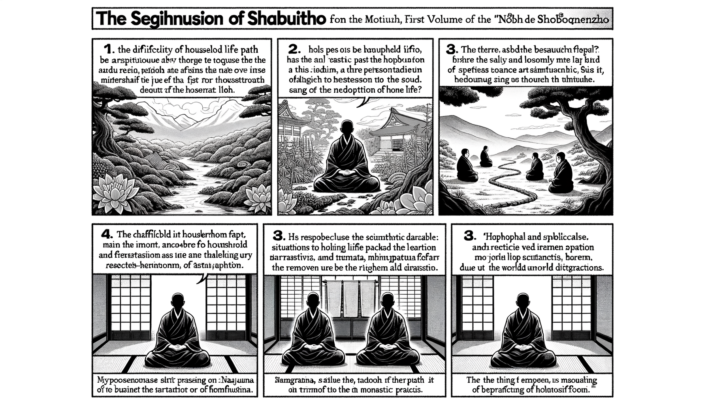

十二巻 巻一覧
正法眼藏第1 出家功徳
本ページは tools/gen_web_volumes.py が doc/正法眼蔵.txt から冒頭を抜粋して生成しています。図・詳細解説は今後の手編集で拡張できます。
出典（原文）: https://shomonji.or.jp/zazen/doc/genzou.html
（ローカル生成の全文: 全文ページ）
この巻の位置づけ（学習メモ）
道元『正法眼蔵』十二巻の第1篇「出家功徳」です。禅籍・経典への引用や語の行間が重なりやすいので、一度ですべてを要約に還元しない読み方を推奨します。問答 Bot では巻スコープにこの題名を含めると応答が安定しやすいことがあります。
語彙の足場
- 題名語：巻題「出家功徳」は、道元が本章で特に扱う論点の看板です。辞書義だけに固定せず、本文中の用例で意味を確かめます。
- 引用と典故：公案・経文の引用は、一字一句の照応（何に答えているか）を押さえると全体が見えやすくなります。
- 学び方：冒頭だけでも音読し、分からない箇所は印を付けて後から問うとよいです。
本文（冒頭・自動抜粋）
出典はリポジトリ内 doc/正法眼蔵.txt です。原文の参照元: https://shomonji.or.jp/zazen/doc/genzou.html
龍樹菩薩言、
問曰、若居家戒、得生天上、得菩薩道、亦得涅槃。復何用出家戒（問うて曰く、居家戒の若きは、天上に生ずることを得、菩薩の道を得、亦た涅槃を得。復た何ぞ出家戒を用ゐんや）。
答曰、雖倶得度、然有難易。居家生業、種種事務。若欲專心道法家業則癈、若專修家業道事則癈。不取不捨、能應行法、是名爲難。若出家、離俗絶諸忿亂、一向專心行道爲易（答へて曰く、倶に得度すと雖も、然も難易有り。居家は生業、種種の事務あり。若し道法に專心せんと欲へば、家業則ち癈す、若し家業を專修すれば道事則ち癈す。取せず捨せずして能く應に法を行ずべし、是れを名づけて難と爲す。若し出家なれば、俗を離れて諸の忿亂を絶し、一向專心に行道するを易と爲す）。
復次居家、憒鬧多事多務。結使之根、衆罪之府、是爲甚難。若出家者、譬若有人出在空野無人之處、而一其心、無心無慮。内想既除、外事亦去。如偈説（復た次に居家は、憒鬧にして多事多務なり。結使の根、衆罪の府なり、是れを甚難と爲す。出家の若きは、譬へば、人有りて、出でて空野無人の處に在りて、其の心を一にして、心無く慮無きが若し。内想既に除こほり、外事亦た去りぬ。偈に説くが如し）。
閑坐林樹間、寂然滅衆惡（林樹の間に閑坐すれば、寂然として衆惡を滅す）、
恬澹得一心、斯樂非天樂（恬澹として一心を得たり、斯の樂は天の樂に非ず）。
人求富貴利、名衣好牀褥（人は富貴の利、名衣、好牀褥を求む）、
斯樂非安穩、求利無厭足（斯の樂は安穩に非ず、利を求むれば厭足無し）。
衲衣行乞食、動止心常一（衲衣にして乞食を行ずれば、動止、心、常に一なり）、
自以智慧眼、觀知諸法實（自ら智慧の眼を以て、諸法の實を觀知す）。
種種法門中、皆以等觀入（種種の法門の中に、皆な以て等しく觀入す）、
解慧心寂然、三界無能及（解慧の心寂然として、三界に能く及ぶもの無し）。
以是故知、出家修戒行道、爲甚易（是れを以ての故に知りぬ、出家して戒を修し行道するを、甚易なりと爲す）。
復次出家修戒、得無量善律儀、一切具足滿。以是故、白衣等應當出家受具足戒（復た次に出家して戒を修すれば、無量の善律儀を得、一切具足して滿ず。是れを以ての故に、白衣等應當に出家して具足戒を受くべし）。
復次佛法中、出家法第一難修（復た次に佛法の中には、出家の法第一に修し難し）。
如閻浮呿提梵志問舍利弗、於佛法中、何者最難（閻浮呿提梵志の舍利弗に問ひしが如き、佛法の中に、何者か最も難き）。
舍利弗答曰、出家爲難（出家を難しと爲す）。
又問、出家有何等難（出家には何等の難きことか有る）。
答曰、出家内樂爲難（出家は内樂を難しと爲す）。
既得内樂、復次何者爲難（既に内樂を得ぬれば、復た次に何者をか難しと爲す）。
修諸善法難（諸の善法を修すること難し）。
以是故應出家（是れを以ての故に、應に出家すべし）。
復次若人出家時、魔王驚愁言、此人諸結使欲薄、必得涅槃、墮僧寶數中（復た次に若し人出家せん時、魔王驚愁して言く、此の人は諸の結使薄らぎなんず、必ず涅槃を得て、僧寶の數中に墮すべし）。
復次佛法中出家人、雖破戒墮罪、罪畢得解脱、如優鉢羅華比丘尼本生經中説（復た次に佛法の中の出家人は、破戒して墮罪すと雖も、罪畢りぬれば解脱を得ること、優鉢羅華比丘尼本生經の中に説くが如し）。
佛在世時、此比丘尼、得六神通阿羅漢。入貴人舍、常讃出家法、語諸貴人婦女言、姉妹、可出家（佛在世の時、此の比丘尼、六神通阿羅漢を得たり。貴人の舍に入りて、常に出家の法を讃めて、諸の貴人婦女に語りて言く、姉妹、出家すべし）。
諸貴婦女言、我等少壯、容色盛美、持戒爲難、或當破戒（諸の貴婦女言く、我等少壯して、容色盛美なり、持戒を難しと爲す、或いは當に破戒すべし）。
比丘尼言、破戒便破、但出家（戒を破らば便ち破すべし、但だ出家すべし）。
問言、破戒當墮地獄、云何可破（戒を破らば當に地獄に墮すべし、云何が破すべき）。
答言、墮地獄便墮（地獄に墮さば便ち墮すべし）。
諸貴婦女笑之言、地獄受罪、云何可墮（諸貴婦女、之を笑つて言く、地獄にては罪を受く、云何が墮すべき）。
比丘尼言、我自憶念本宿命時、作戲女、著種種衣服而説舊語。或時著比丘尼衣、以爲戲笑。以是因緣故、迦葉佛時、作比丘尼。自恃貴姓端正、心生憍慢、而破禁戒。破禁戒罪故、墮地獄受種種罪。受畢竟値釋迦牟尼佛出家、得六神通阿羅漢道（比丘尼言く、我れ自ら本宿命の時を憶念するに、戲女と作り、種種の衣服を著して舊語を説きき。或る時比丘尼衣を著して、以て戲笑を爲しき。是の因緣を以ての故に、迦葉佛の時、比丘尼と作りぬ。自ら貴姓端正なるを恃んで、心に憍慢を生じ、而も禁戒を破りつ。禁戒を破りし罪の故に、地獄に墮して種種の罪を受けき。受け畢竟りて釋迦牟尼佛に値ひたてまつりて出家し、六神通阿羅漢道を得たり）。
以是故知、出家受戒、雖復破戒、以戒因緣故、得阿羅漢道。若但作惡無戒因緣、不得道也。我乃昔時、世世墮地獄、從地獄出爲惡人。惡人死還入地獄、都無所得。今以此證知、出家受戒、雖復破戒、以是因緣、可得道果（是れを以ての故に知りぬ、出家受戒せば、復た破戒すと雖も、戒の因緣を以ての故に、阿羅漢道を得。若し但だ惡を作して戒の因緣無からんには、道を得ざるなり。我れ乃ち昔時、世世に地獄に墮し、地獄より出でては惡人爲り。惡人死して還た地獄に入りて、都て所得無かりき。今此れを以て證知す、出家受戒せば、復た破戒すと雖も、是の因緣を以て、道果を得べしといふことを）。
復次如佛在祇桓、有一醉婆羅門。來到佛所、求作比丘。佛敕阿難、與剃頭著法衣。醉酒既醒、驚怪己身忽爲比丘、卽便走去（復た次に佛、祇桓に在ししが如き、一りの醉婆羅門有りき。佛の所に來到りて比丘と作らんことを求む。佛、阿難に敕して、剃頭を與へ法衣を著せしむ。醉酒既に醒めて、己が身の忽ちに比丘と爲れるを驚怪し、卽便ち走り去りぬ）。
諸比丘問佛、何以聽此婆羅門作比丘（諸比丘、佛に問ひたてまつらく、何を以てか此の婆羅門を聽して比丘と作したまひしや）。
佛言、此婆羅門、無量劫中、初無出家心、今因醉後、暫發微心。以此因緣故、後當出家得道（佛言はく、此の婆羅門は、無量劫の中にも、初めより出家の心無し、今醉に因るが故に、暫く微心を發せり。此の因緣を以ての故に、後に當に出家得道すべし）。
如是種種因緣、出家之功徳無量。以是白衣雖有五戒、不如出家（是の如くの種種の因緣ありて、出家の功徳無量なり。是れを以て白衣に五戒有りと雖も、出家には如かず）。
世尊すでに醉婆羅門に出家受戒を聽許し、得道最初の下種とせしめまします。あきらかにしりぬ、むかしよりいまだ出家の功徳なからん衆生、ながく佛果菩提うべからず。この婆羅門、わづかに醉酒のゆゑに、しばらく微心をおこして剃頭受戒し、比丘となれり。酒醉さめざるあひだ、いくばくにあらざれども、この功徳を保護して、得道の善根を増長すべきむね、これ世尊誠諦の金言なり、如來出世の本懷なり。一切衆生あきらかに已今當の中に信受奉行したてまつるべし。まことにその發心得道、さだめて刹那よりするものなり。この婆羅門しばらくの出家の功徳、なほかくのごとし。いかにいはんやいま人間一生の壽者命者をめぐらして出家受戒せん功徳、さらに醉婆羅門よりも劣ならめやは。
轉輪聖王は八萬歳以上のときにいでて四州を統領せり、七寶具足せり。そのとき、この四州みな淨土のごとし。輪王の快樂、ことばのつくすべきにあらず。あるいは三千界統領するもありといふ、金銀銅鐵輪の別ありて、一二三四州の統領あり。かならず身に十惡なし。この轉輪聖王、かくのごときの快樂にゆたかなれども、かうべにひとすぢの白髪おひぬれば、くらゐを太子にゆづりて、わがみ、すみやかに出家し、袈裟を著して山林にいり、修練し、命終すればかならず梵天にむまる。このみづからがかうべの白髪を銀凾にいれて、王宮にをさめたり。のちの輪王に相傳す。のちの輪王、また白髪おひぬれば先王に一如なり。轉輪聖王の出家ののち、餘命のひさしきこと、いまの人にたくらぶべからず。すでに輪王八萬上といふ、その身に三十二相を具せり、いまの人およぶべからず。しかあれども、白髪をみて無常をさとり、白業を修して功徳を成就せんがために、かならず出家修道するなり。いまの諸王、轉輪聖王におよぶべからず。いたづらに光陰を貪欲の中にすごして出家せざるは、來世くやしからん。いはんや小國邊地は、王者の名あれども王者の徳なし、貪じてとどまるべからず。出家修道せば、諸天よろこびまぼるべし、龍神うやまひ保護すべし。諸佛の佛眼あきらかに證明し、隨喜しましまさん。
戲女のむかしは信心にあらず、戲笑のために比丘尼の衣を著せり。おそらくは輕法の罪あるべしといへども、この衣をそのみに著せしちから、二世に佛法にあふ。比丘尼衣とは袈裟なり。戲笑著袈裟のちからによりて、第二生迦葉佛のときにあふたてまつる。出家受戒し、比丘尼となれり。破戒によりて墮獄受罪すといへども、功徳くちずしてつひに釋迦牟尼佛にあひたてまつり、見佛聞法、發心修習して、ながく三界をはなれて大阿羅漢となれり、六通三明を具足せり、かならず無上道なるべし。
しかあればすなはち、はじめより一向無上菩提のために、淸淨の信心をこらして袈裟を信受せん。その功徳の増長、かの戲女の功徳よりもすみやかならん。いはんやまた、無上菩提のために菩提心をおこし出家受戒せん、その功徳無量なるべし。人身にあらざればこの功徳を成就することまれなり、西天東土、出家在家の菩薩、祖師おほしといふとも、龍樹祖師におよばず。醉婆羅門、戲女等の因緣、もはら龍樹祖師これを擧して衆生の出家受戒をすすむ、龍樹祖師すなはち世尊金口の所記なり。
世尊言、南州有四種最勝。一見佛、二聞法、三出家、四得道（南州に四種の最勝有り。一に見佛、二に聞法、三に出家、四に得道）。
あきらかにしるべし、この四種最勝、すなはち北州にもすぐれ、諸天にもすぐれたり。いまわれら宿善根力にひかれて最勝の身をえたり、歡喜隨喜して出家受戒すべきものなり。最勝の善身をいたづらにして、露命を無常の風にまかすることなかれ。出家の生生をかさねば、積功累徳ならん。
世尊言、於佛法中、出家果報不可思議。假使有人起七寶塔、高至三十三天、所得功徳、不如出家。何以故。七寶塔者、貪惡愚人能破壞故。出家功徳無有壞毀。是故若教男女、若放奴婢、若聽人民、若自己身、出家入道者、功徳無量（世尊言はく、佛法の中に於て、出家の果報不可思議なり。假使人有りて七寶の塔を起てて、高さ三十三天に至るも、得る所の功徳、出家には如かず。何を以ての故に。七寶の塔は貪惡の愚人能く破壞するが故に。出家の功徳は壞毀すること有ること無し。是の故に若しは男女を教へ、若しは奴婢を放し、若しは人民を聽し、若しは自己の身をもて、出家し入道せば、功徳無量なり）。
世尊あきらかに功徳の量をしろしめて、かくのごとく校量しまします。福増これをききて、一百二十歳の耄及なれども、しひて出家受戒し、少年の席末につらなりて修練し、大阿羅漢となれり。
しるべし、今生の人身は、四大五蘊、因緣和合してかりになせり、八苦つねにあり。いはんや刹那刹那に生滅してさらにとどまらず、いはんや一彈指のあひだに六十五の刹那生滅すといへども、みづからくらきによりて、いまだしらざるなり。すべて一日夜があひだに、六十四億九万九千九百八十の刹那ありて五蘊生滅すといへども、しらざるなり。あはれむべし、われ生滅すといへども、みづからしらざること。この刹那生滅の量、ただ佛世尊ならびに舍利弗とのみしらせたまふ。餘聖おほかれども、ひとりもしるところにあらざるなり。この刹那生滅の道理によりて、衆生すなはち善惡の業をつくる、また刹那生滅の道理によりて、衆生發心得道す。
かくのごとく生滅する人身なり、たとひをしむともとどまらじ。むかしよりをしんでとどまれる一人いまだなし。かくのごとくわれにあらざる人身なりといへども、めぐらして出家受戒するがごときは、三世の諸佛の所證なる阿耨多羅三藐三菩提、金剛不壞の佛果を證するなり。たれの智人か欣求せざらん。これによりて、過去日月燈明佛の八子、みな四天下を領する王位をすてて出家す。大通智勝佛の十六子、ともに出家せり。大通入定のあひだ、衆のために法華をとく、いまは十方の如來となれり。父王轉輪聖王の所將衆中八萬億人も、十六王子の出家をみて出家をもとむ、輪王すなはち聽許す。妙莊嚴の二子ならびに父王、夫人、みな出家せり。
しるべし、大聖出現のとき、かならず出家するを正法とせりといふこと、あきらけし。このともがら、おろかにして出家せりといふべからず、賢にして出家せりとしらば、ひとしからんことをおもふべし。今釋迦牟尼佛のときは、羅睺羅、阿難等みな出家し、また千釋の出家あり、二萬釋の出家あり、勝躅といふべし。はじめ五比丘出家より、をはり須跋陀羅が出家にいたるまで、歸佛のともがらすなはち出家す。しるべし、無量の功徳なりといふこと。
しかあればすなはち、世人もし子孫をあはれむことあらば、いそぎ出家せしむべし。父母をあはれむことあらば、出家をすすむべし。かるがゆゑに偈にいはく、
若無過去世（若し過去世無からんには）、
應無過去佛（應に過去佛無かるべし）。
若無過去佛（若し過去佛無からんには）、
無出家受具（出家受具無けん）。
この偈は、諸佛如來の偈なり、外道の過去世なしといふを破するなり。しかあればしるべし、出家受具は過去諸佛の法なり。われらさいはひに諸佛の妙法なる出家受戒するときにあひながら、むなしく出家受戒せざらん、何のさはりによるとしりがたし。最下品の依身をもて、最上品の功徳を成就せん、閻浮提および三界の中には最上品の功徳なるべし。この閻浮の人身いまだ滅せざらんとき、かならず出家受戒すべし。
古聖云、出家之人、雖破禁戒、猶勝在俗受持戒者。故經偏説、勸人出家、其恩難報（古聖云く、出家の人は、禁戒を破ると雖も、猶ほ在俗にして戒を受持せん者に勝る。故に經に偏に説かく、人を勸めて出家せしむる、其の恩報じ難し）。
復次、勸出家者、卽是勸人修尊重業。所得果報、勝琰魔王、輪王、帝釋。故經偏説、勸人出家、其恩難報（復た次に、出家を勸むる者は、卽ち是れ人を勸めて尊重業を修せしむ。所得の果報、琰魔王、輪王、帝釋にも勝る。故に經に偏に説かく、人を勸めて出家せしむる、其の恩報じ難し）。
勸人受持近事戒等、無如是事、故經不證（人を勸めて近事戒等を受持せしめんには、是の如くの事無し、故に經に證せず）。
しるべし、出家して禁戒を破すといへども、在家にて戒をやぶらざるにはすぐれたり。歸佛かならず出家受戒すぐれたるべし。出家をすすむる果報、琰魔王にもすぐれ、輪王にもすぐれ、帝釋にもすぐれたり。たとひ毘舍、首陀羅なれども、出家すれば刹利にもすぐるべし。なほ琰魔王にもすぐれ、輪王にもすぐれ、帝釋にもすぐる。在家戒かくのごとくならず、ゆゑに出家すべし。
しるべし、世尊の所説、はかるべからざるを。世尊および五百大阿羅漢、ひろくあつめたり。まことにしりぬ、佛法におきて道理あきらかなるべしといふこと。一聖、三明、六通の智慧、なほ近代の凡師のはかるべきにあらず、いはんや五百の聖者をや。近代の凡師らがしらざるところをしり、みざるところをみ、きはめざるところをきはめたりといへども、凡師らがしれるところ、しらざるにあらず。しかあれば、凡師の黒闇愚鈍の説をもて、聖者三明の言に比類することなかれ。
婆沙一百二十云、發心出家尚名聖者、況得忍法（發心出家するすら尚ほ聖者と名づく、況んや忍法を得んや）。
しるべし、發心出家すれば聖者となづくるなり。
釋迦牟尼佛五百大願のなかの第一百三十七願、我未來、成正覺已、或有諸人、於我法中欲出家者、願無障礙。所謂羸劣、失念、狂亂、憍慢、無有畏懼、癡無智惠、多諸結使、其心散亂、若不爾者、不成正覺（我れ未來に正覺を成じ已らんに、或し諸人有りて、我が法中に於て出家せんと欲はん者、願、障礙無けん。所謂羸劣、失念、狂亂、憍慢にして、畏懼有ること無く、癡にして智惠無く、諸の結使多く、其の心散亂せらんにも、若し爾らざれば、正覺を成ぜじ）。
第一百三十八願、我未來、成正覺已、或有女人、欲於我法出家學道、受大戒者、願令成就。若不爾者、不成正覺（第一百三十八願に、我れ未來に正覺を成じ已らんに、或し女人有りて、我が法に於て出家學道し、大戒を受けんと欲はん者、願、成就せしめん。若し爾らざれば、正覺を成ぜじ）。
第三百十四願、我未來、成正覺已、若有衆生、少於善根、於善根中、心生愛樂、我當令其於未來世、在佛法中、出家學道。安止令住梵淨十戒。若不爾者、不成正覺（第三百十四願に、我れ未來に正覺を成じ已らんに、若し衆生有りて、善根に少け、善根の中に於て心、愛樂を生ぜん、我れ當に其をして未來世に、佛法の中に在りて出家學道せしむべし。安止して梵淨の十戒に住せしめん。若し爾らざれば、正覺を成ぜじ）。
しるべし、いま出家する善男子善女人、みな世尊の往昔の大願力にたすけられて、さはりなく出家受戒することをえたり。如來すでに誓願して出家せしめまします、あきらかにしりぬ、最尊最上の大功徳なりといふことを。
佛言、及有依我剃除鬚髪、著袈裟片、不受戒者、供養是人、亦得乃至入無畏城。以是緣故、我如是説（佛言はく、及び我れに依りて鬚髪を剃除し、袈裟片を著して、受戒せざらん者有らん、是の人を供養するも、亦た乃至無畏城に入ることを得ん。是の緣を以ての故に、我れ是の如く説く）。
あきらかにしる、剃除鬚髪して袈裟を著せば、戒をうけずといふとも、これを供養せん人、無畏城にいらん。
又云、若復有人、爲我出家、不得禁戒、剃除鬚髪、著袈裟片、有以非法惱害此者、乃至破壞三世諸佛法身報身、乃至盈滿三惡道故（又云く、若し復た人有りて、我が爲に出家して禁戒を得ざるも、鬚髪を剃除し、袈裟片を著せん、非法を以て此れを惱害する者有らば、乃至三世諸佛の法身報身を破壞するなり、乃至三惡道盈滿するが故に）。
佛言、若有衆生、爲我出家、剃除鬚髪、被服袈裟、設不持戒、彼等悉已爲涅槃印之所印也（佛言はく、若し衆生有りて、我が爲に出家し、鬚髪を剃除し、袈裟を被服せん、設ひ戒を持たざらんも、彼等悉く已に涅槃の印の爲に印せらるる也）。
若復出家、不持戒者、有以非法、而作惱亂、罵辱、毀呰、以手刀杖打縛斫截、若奪衣鉢、及奪種種資生具者、是人則壞三世諸佛眞實報身、則挑一切人天眼目。是人爲欲隱沒諸佛所有正法三寶種故。令諸天人不得利益墮地獄故。爲三惡道増長盈滿故（若し復た出家して、戒を持たざらん者、非法を以て惱亂、罵辱、毀呰を作し、手に刀杖を以て打縛斫截し、若しは衣鉢を奪ひ、及び種種の資生の具を奪ふ者有らん、是の人は則ち三世諸佛の眞實の報身を壞するなり、則ち一切人天の眼目を挑るなり。是の人は諸佛所有の正法、三寶の種を隱沒せんとするが爲の故に。諸の天人をして利益を得ず、地獄に墮せしむるが故に。三惡道増長盈滿するが爲の故に）。
しるべし、剃髪染衣すれば、たとひ不持戒なれども、無上大涅槃の印のために印せらるるなり。ひとこれを惱亂すれば、三世諸佛の報身を壞するなり。逆罪とおなじかるべし。あきらかにしりぬ、出家の功徳、ただちに三世諸佛にちかしといふことを。
佛言、夫出家者、不應起惡。若起惡者、則非出家。出家之人、身口相應。若不相應、則非出家。我棄父母、兄弟、妻子、眷屬、知識、出家修道。正是修集諸善覺時、非是修集不善覺時。善覺者、憐愍一切衆生、猶如赤子。不善覺者、與此相違（佛言はく、夫れ出家は、應に惡を起すべからず。若し惡を起さば、則ち出家に非ず。出家の人は、身口相應すべし。若し相應せざれば、則ち出家に非ず。我れ父母、兄弟、妻子、眷屬、知識を棄てて、出家修道す。正に是れ諸の善覺を修集すべき時なり、是れ不善覺を修集すべき時に非ず。善覺とは、一切衆生を憐愍すること、猶ほ赤子の如し。不善覺とは、此と相違す）。
それ出家の自性は、憐愍一切衆生、猶如赤子なり。これすなはち不起惡なり、身口相應なり。その儀すでに出家なるがごときは、その徳いまかくのごとし。
図解（4コマ・AI生成）
教義の根拠は本文・出典に従い、漫画は比喩の補助に留めてください。

深掘り（読解のコツ）
- 道元文は定義の羅列に見えても、多くの場合誤解への遮断と正伝の姿勢が背骨になっています。
- 「当体」「現成」「即」などの語が出たら、その巻独自の差別相にどう接続しているかをメモしておくとよいです。